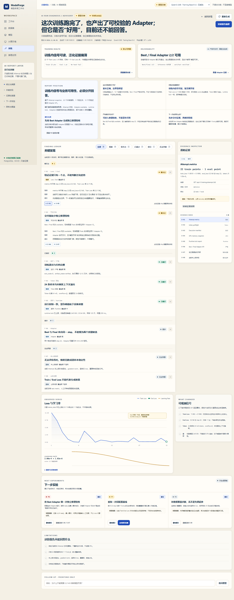
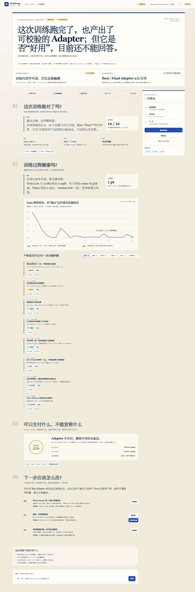
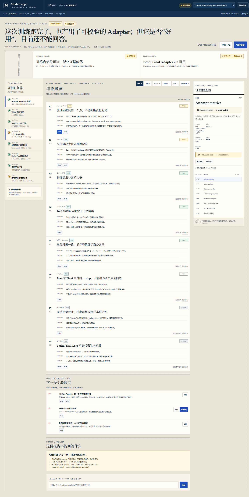

MODELFORGE · TRAINING / 2026.11.06
先解释证据，
再给训练结论。
AI 智能报告分析的设计探索：把“训练是否完成”“过程是否健康”“产物能否交付”“下一步怎么改”拆成可审计的双门禁结论。三套方案共用真实 Attempt 事实，但不冒充 AI、GPU 或推理验收结果。
THREE DISTINCT MODELS
三个方向，不是三套换色
分别按“证据优先”“教练叙事”“审计链路”组织同一批事实。点击进入完整可交互原型。








SHARED CONTRACT
三套方案都必须守住的设计合同
布局与叙事可以不同，但事实边界一致：AI 是 advisory 层，不替代硬门禁。
01 / 双结论
训练健康度与可交付性分开
训练链路完成不代表模型可用；Adapter available 也不代表推理 ready。两个判断各有证据与门禁。
02 / 分层
观测、推断、建议不能混写
每项结论都先给事实，再给有限推断和行动建议；置信度与限制随结论一同出现。
03 / 追溯
结论必须挂 evidence chip
能从结论跳到指标、manifest、runtime、Adapter API 或推理 Trials 证据；证据缺失也保留为缺口。
04 / 克制
没有数据就写“无法判断”
不补造 task metric、throughput、gradient norm 或根因；不用 Loss 推断业务效果，不绕过推理验收。
SIDE-BY-SIDE
三方案对比
成本按本轮原型之外的正式前端实现估算，不含后端 AI 生成、证据接口与权限治理。
| 比较维度 | 方案 A · 专业诊断信号台 | 方案 B · 教练式训练简报 | 方案 C · 证据审计台 |
|---|---|---|---|
| 信息架构 | 双栏诊断 + 右侧证据结论 → 严重度发现 → 图表 → 实验 → 限制。 | 四章叙事 + 行动便签按四个业务问题展开，自左向右阅读。 | 时间线 + 账页 + 检查器按证据链和观测/推断/建议分层。 |
| 视觉主张 | 密集控制台奶油底、蓝色强调、紧凑指标，最贴近现有 ModelForge。 | 编辑部简报衬线大标题、长文叙事、留白和便签，更像人写报告。 | 审计档案深蓝页眉、等宽索引、层叠账页，强调可追溯与克制。 |
| 核心交互 | 筛选严重度、展开 evidence chip、检查图表与建议、复制/应用配置。 | 按章节阅读、弹出证据、复制结论、应用实验草稿、追问。 | 点时间线定位证据、在账页切换论断、检查原文，观察推断与建议。 |
| 实现成本 | 中组件拆分清晰，适合嵌入现有训练详情；图表和状态已有先例。 | 中结构与样式不难，难在文案治理、内容边界和长页面信息节奏。 | 高需要稳定的证据 ID、来源映射与跨栏目联动，移动端降级也更复杂。 |
| 适用场景 | 训练详情主路径、工程师排障、QA 复核、作为正式版本基线。 | 业务评审、运营解释、向非工程角色交付“这轮训练发生了什么”。 | 研究审计、失败复盘、证据追踪、对报告结论要求强可追溯的团队。 |
| 主要风险 | 信息密度高；若证据映射不严，会变成另一张普通仪表盘。 | 容易过度叙事，让“人话结论”看起来比证据更确定。 | 认知与工程成本最高；移动端必须避免把三栏硬塞进一屏。 |
DECISION
推荐：A 做骨架，吸收 B 的结论句与 C 的证据链
保留 A 的工程可读性和渐进落地性；不把 B 的叙事或 C 的审计界面整体照搬。
先做“可信的诊断台”，再做“讲故事的报告”
当前真实证据足以支持训练内健康信号和产物可交付检查，但不足以支持业务效果结论。A 最适合把这种“部分可判断”做成可用的工作界面。B 的一句话结论可放在入口与报告顶部，C 的证据检查器可作为右侧可展开层。
01
固定双结论训练健康度：部分可判断；可交付性：Best / Final 2/2 available，但推理验收未关联。
02
以证据 ID 驱动发现每条 finding 绑定来源、字段、样本和限制；没有证据就进入“无法判断”而不是隐藏。
03
建议只创建未提交草稿应用配置必须弹窗核对；不自动提交训练、不创建 GPU、不修改历史 Attempt。
04
将推理验收作为独立门禁报告可提示“可进入验收”，不能把 Adapter available 改写成“模型可用”。
COVERAGE MATRIX
状态覆盖
每个原型都可演示入口、报告、失败/不足与建议应用；“生成中”在 C 中完整展开，A/B 复用同一报告生成路径。
状态
A
B
C
AI 报告入口 / 结论卡
已覆盖
已覆盖
已覆盖
成功但可用性未验证
已覆盖
已覆盖
已覆盖
失败 Attempt 复盘
已覆盖
已覆盖
已覆盖
无报告 / 证据不足
已覆盖
已覆盖
已覆盖
生成中 / 重新生成
已覆盖
已覆盖
已覆盖
严重度筛选 / 证据展开
已覆盖
已覆盖
已覆盖
应用建议配置对话框
已覆盖
已覆盖
已覆盖
Attempt 切换
已覆盖
已覆盖
已覆盖
原型边界：本页与三套原型只使用本次探索中读取到的 Attempt 快照与已归档证据，所有界面数据标注“原型示例”。未连接 AI 模型、未请求后端生成报告、未修改正式业务代码、未创建数据库或 GPU。真实页面可访问地址：http://127.0.0.1:8092/；API：http://127.0.0.1:8102。